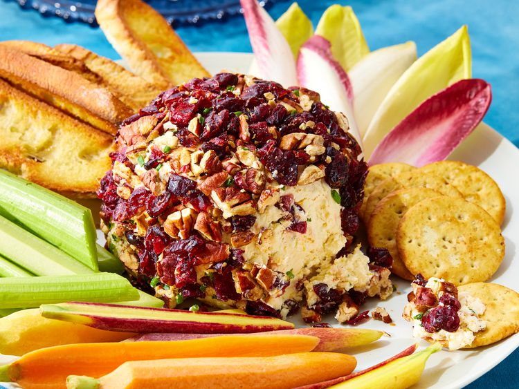

Home
Cranberry Cheese Ball

Description
Cranberry Cheese Ball is a delightful appetizer that combines the creamy texture of cheese with the tart sweetness of cranberries. This cheese ball is perfect for holiday gatherings, parties, or as a snack on a quiet evening.
The combination of cheese and cranberries creates a unique flavor profile that is both creamy and tangy, while the cranberries add a burst of color and festive touch.
Ingredients
- Cream Cheese: Use full-fat cream cheese for the best texture and flavor.
- Cranberries: Fresh or dried cranberries can be used depending on your preference.
- Nuts: Chopped pecans or walnuts for coating the cheese ball.
- Herbs: Fresh herbs like parsley or chives for added flavor.
- Optional: A drizzle of honey or a sprinkle of cinnamon for extra sweetness.
Steps
- In a mixing bowl, combine the cream cheese, chopped cranberries, and fresh herbs. Mix until well combined.
- Shape the mixture into a ball using your hands or a spatula.
- Roll the cheese ball in chopped nuts until fully coated.
- Wrap the cheese ball in plastic wrap and refrigerate for at least 1 hour to allow the flavors to meld.
- Before serving, optionally drizzle with honey or sprinkle with cinnamon for added flavor.
- Serve with crackers, bread, or fresh fruit.